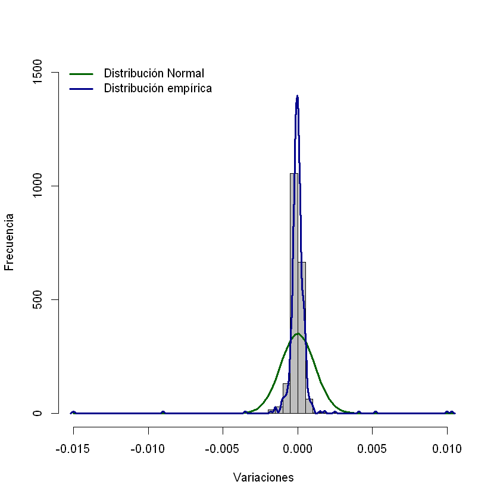

VaR Bonos¶
Importar datos.¶
datos = read.csv("Bono 2020.csv", sep = ";", dec = ",")
Precio sucio¶
precio = 110.315
Variaciones de las tasas.¶
No se calcula el rendimiento sino las variaciones de las tasas. Como el histórico de tasas no está dividido por 100, en el siguiente código sí se hace.
variaciones = diff(tasas)/100
Volatilidad de las tasas.¶
Como se está trabajando con las tasas, se calcula la desviación estándar, esta será la volatilidad de las tasas.
vol_tasas = sd(variaciones)
vol_tasas
hist(variaciones,breaks=40,col="gray",xlab="Variaciones",ylab="Frecuencia",main="",freq=F,ylim=c(0,1500))
curve(dnorm(x,mean=0,sd=vol_tasas),add=T,lwd=3,col="darkgreen")
lines(density(variaciones),lwd=3,col="darkblue")
legend("topleft",c("Distribución Normal","Distribución empírica"),lty=c(1,1),col=c("darkgreen","darkblue"),bty="n",lwd=c(3,3))
{kind=link}

Bono¶
Este es un ejemplo de un TES de la BVC.
Referencia: TFIT10040522
Precio sucio: 110,315.
Rendimiento: 4,95%.
Nominal: 100.
Tasa cupón: 7%.
Frecuencia cupón: Anual.
Día de liquidación: 2020-03-31 (último día de la serie de tiempo cargada).
Día de vencimiento: 2022-05-04.
VaR de los bonos o TES¶
1¶
Peor incremento en la TIR:
Método paramétrico: supone que los cambios en la tasa tienen distribución normal.
Método no paramétrico: método de simulación histórica.
En los bonos existe una relación inversa entre el precio y el rendimiento. Cuando el rendimiento aumenta el precio disminuye. Para el tenedor de un bono las péridas se generan cuando el rendimiento incrementa, entonces cuando el precio disminuye.
VaR diario paramétrico en porcentaje con un nivel de confianza del 95%¶
NC = 0.95
Duración Modificada¶
library(jrvFinance)
Warning message:
"package 'jrvFinance' was built under R version 3.6.3"
duracion_modificada = bond.durations(settle = "2020-03-31", mature = "2022-05-04", coupon = 0.07, freq = 1,yield = 0.0495, convention = "ACT/ACT", modified = T, redemption_value = 100)
duracion_modificada
VaR_bono_parametrico = precio*duracion_modificada*vol_tasas*qnorm(NC)/100
VaR_bono_parametrico
VaR_bono_parametrico*500000000
VaR diario no paramétrico en porcentaje con un nivel de confianza del 95%¶
VaR_bono_no_parametrico = precio*duracion_modificada*quantile(variaciones,NC)/100
VaR_bono_no_parametrico
VaR diario no paramétrico en términos monetarios con un nivel de confianza del 95%¶
VaR_bono_no_parametrico*500000000
hist(variaciones, breaks = 40, col = "gray", xlab = "Variaciones", ylab = "Frecuencia", main = "", freq = F, ylim = c(0,1500))
curve(dnorm(x, mean = 0, sd = vol_tasas), add = T, lwd = 3, col = "darkgreen")
lines(density(variaciones), lwd = 3, col = "darkblue")
abline(v = VaR_bono_parametrico, lwd = 3, col = "darkred")
abline(v = VaR_bono_no_parametrico, lwd = 3, col = "purple")
legend("topleft", c("Distribución Normal", "Distribución empírica", "Var no paramétrico", "VaR paramétrico"), lty = c(1,1,1,1), col = c("darkgreen", "darkblue", "purple", "darkred"), bty = "n", lwd = c(3,3,3,3))